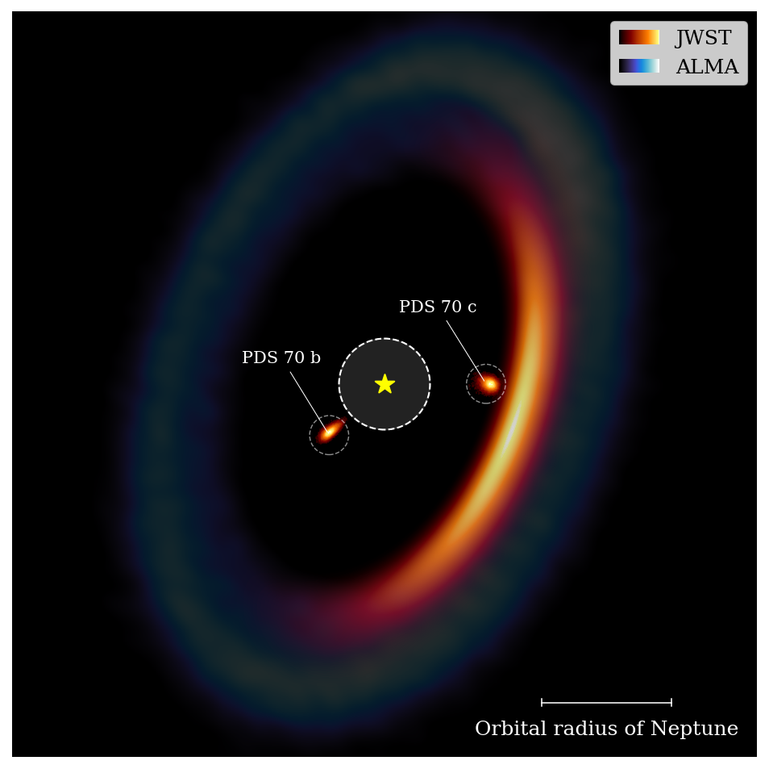

Community
Circumplanetary Disks in the JWST Era
I co-lead an ISSI International Team bringing observers and theorists together to shape the next phase of CPD research.
Explore the ISSI team
Postdoctoral researcher in astrophysics,
University of Zürich
I study how planets and moons form using the world's most advanced telescopes.
I am a postdoctoral researcher in the Department of Astrophysics at the University of Zürich. I observe newborn giant planets and the disks that surround them, combining JWST with powerful ground-based telescopes to understand how planets grow and how moon systems begin.
Community
I co-lead an ISSI International Team bringing observers and theorists together to shape the next phase of CPD research.
Explore the ISSI teamNew paper · 2026
Our MIRI survey shows that protoplanets remain elusive even at long wavelengths, while some planet-forming disks are detected.
Read the paperI study how planets and moons form by combining high-contrast imaging, infrared spectroscopy, and advanced data analysis tools on facilities such as JWST, ALMA, the VLT, and soon the ELT. My work focuses on three tightly connected themes:
 Illustration: NASA, ESA, CSA, STScI; G. Cugno, S. Grant, J. Olmsted & L. Hustak
Illustration: NASA, ESA, CSA, STScI; G. Cugno, S. Grant, J. Olmsted & L. Hustak
I study the compact disks of gas and dust that feed young giant planets and provide the raw material for moons. With JWST, I separate their faint light from the nearby stars and use their spectra to reveal their gas and dust properties.

Image: Blakely et al. (2024)I search for young, still-forming giant planets embedded in their natal disks and characterise their light from optical to mid-infrared wavelengths. These observations reveal how bright planets glow, how quickly they are growing, and how they interact with their natal environment.
 Figure: Cugno et al. (2025)
Figure: Cugno et al. (2025)
I study the broad disks around young stars, where planets take shape and carve rings, gaps, and spirals. With optical images and a new technique that uses background stars as probes, I map the material in these disks and investigate how it shapes, and sometimes hides, newborn planets.
Here you can find a selected list of refereed publications that I contributed to.
Here you can find a selected list of talks and seminars that I presented (★ means invited contribution).
Feel free to reach out through the form below if you have a question. I look forward to answering you!